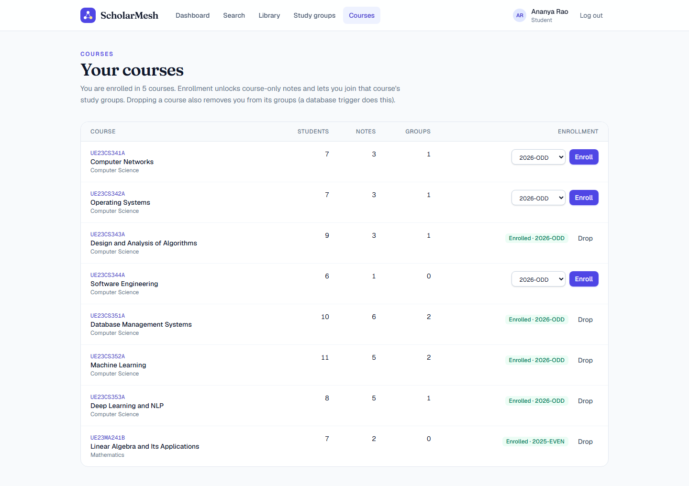
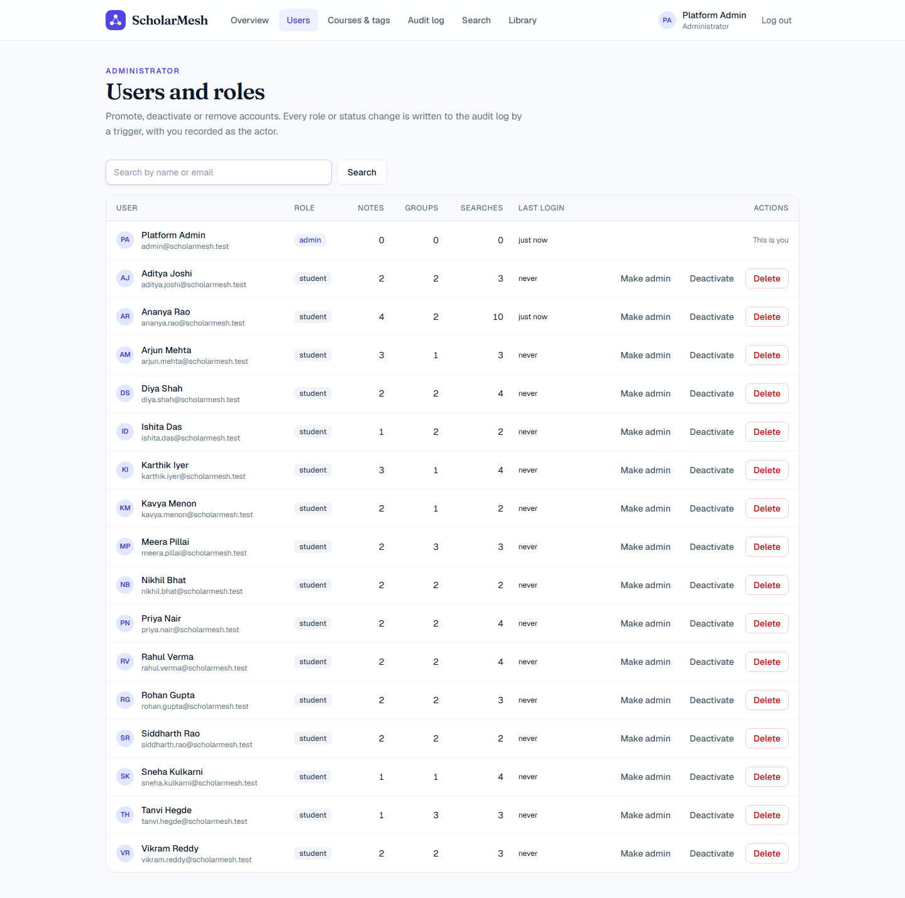
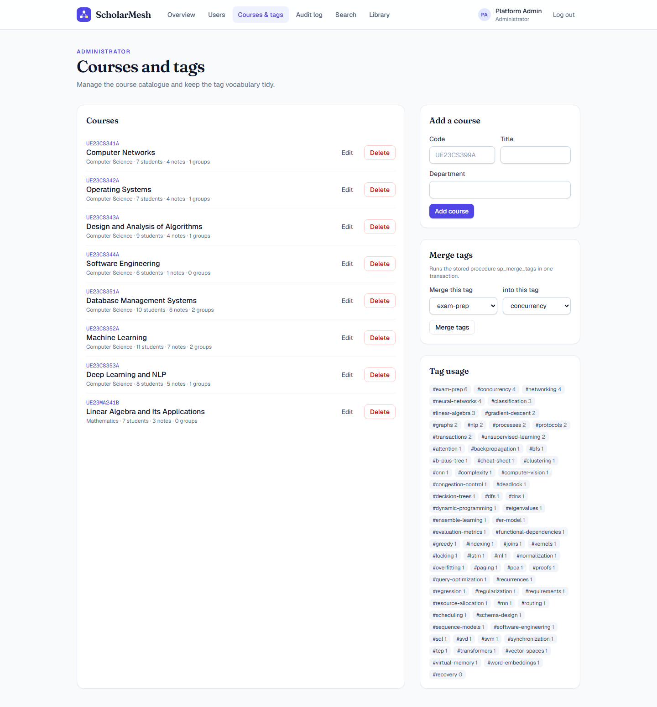

DBMS Mini Project · Level 3 · Phase 2 Submission
Semantic Research-Notes Discovery & Study-Group Matchmaking Platform
| Course | DBMS Experiential Learning — Level 3 Project |
|---|---|
| Institution | PES University, Electronic City Campus · Department of Computer Science and Engineering |
| Team | Darshan P Pawar — SRN PES2UG24CS143 Dhanush V Biradar — SRN PES2UG24CS155 |
| Database option | Option 2 — SQL (PostgreSQL 17) + Vector database (pgvector) |
| Phase 2 scope | Phase 1 review and fixes · DML and seed data · vector search · advanced database features · Next.js application with authentication and roles · security · testing · documentation |
| Source code | https://github.com/Darshanpawar7/DBMS-Mini-Project |
Students collect a large amount of material over a semester — lecture notes, PDFs, cheat sheets, past-paper solutions — but it ends up scattered across Drive folders, WhatsApp groups and laptops. Every one of those tools searches by exact keywords or file names. A student who wants "notes that explain how a model decides which words matter" finds nothing unless someone happened to use those words; the note titled Transformers and Self-Attention Explained stays invisible.
Finding study partners is just as ad hoc: students ask around in class groups, with no way to see who is actually working on the same topics.
ScholarMesh addresses both problems with one database design. Students upload notes; the text is split into passages and turned into embeddings (lists of 384 numbers that capture meaning), so a question finds notes by meaning, not by wording. The same embeddings, averaged over what each student uploads, saves and searches for, form an interest profile that the database uses to recommend study groups and classmates. Course enrollment and a three-level visibility rule (public / course-only / private) decide what anyone is allowed to see.
WHERE title LIKE …; access control is enforced inside every query path by one database function; group
matching combines relational facts (enrollment, membership) with vector similarity; and business rules such as seat
limits and admin hand-over are enforced by triggers that also hold under concurrent requests.ALTER where Phase 2 needs more.student and admin; per-group roles admin/memberENROLLMENT would be synced from the university's student information
system or protected by per-course join codes.Two system roles are stored in STUDENT.role (CHECK: student | admin).
Inside each study group a student additionally has a group role in GROUP_MEMBERSHIP.role
(admin | member). Self-registration always creates a student; only an admin can promote someone.
| ID | Requirement | Role | Implemented by |
|---|---|---|---|
| FR-1 | Register, log in and log out; deactivated accounts cannot log in | All | /api/auth/*, bcrypt, JWT cookie |
| FR-2 | Upload a note (PDF/TXT/MD or pasted text) with title, course, visibility and tags | Student | POST /api/documents, one transaction, trigger chunking |
| FR-3 | Search by keyword, meaning or both, filtered by course and tag | Student, Admin | fn_keyword_search, fn_semantic_search, fn_hybrid_search |
| FR-4 | Only see notes allowed by their visibility (public / enrolled course / own) | Student | fn_visible_doc_ids in every listing and search |
| FR-5 | Browse, filter, sort and paginate the library; bookmark notes; download files | Student | v_document_catalog, BOOKMARK |
| FR-6 | Edit or delete own notes | Owner, Admin | PATCH/DELETE /api/documents/:id |
| FR-7 | Enroll in / drop courses (dropping leaves that course's groups) | Student | ENROLLMENT, trigger T10 |
| FR-8 | Create a group for an enrolled course; the creator becomes group admin | Student | trigger T6 + T5 |
| FR-9 | Join / leave groups; seat limit and enrollment enforced, also under concurrency | Student | sp_join_group, sp_leave_group, trigger T5 (row lock) |
| FR-10 | Group admins promote/demote/remove members; a group never loses its last admin | Group admin | triggers T7, T8 |
| FR-11 | Recommended groups and classmates ranked by interest similarity | Student | fn_recommend_groups, fn_recommend_partners |
| FR-12 | Dashboard: personal statistics, new notes in my courses, trending topics, recent searches | Student | fn_student_stats, GROUP BY/HAVING queries |
| FR-13 | Platform analytics: totals, searches per day, popular questions, content gaps, top contributors | Admin | aggregates, window functions, mv_course_engagement |
| FR-14 | Change roles, deactivate or delete users (not themselves) | Admin | /api/admin/users/:id, audited |
| FR-15 | Manage courses; merge duplicate tags | Admin | /api/admin/courses, sp_merge_tags |
| FR-16 | See an audit trail of sensitive changes with the acting user | Admin | trigger T11 → AUDIT_LOG |
| FR-17 | Re-run the embedding job and refresh analytics | Admin | /api/admin/embeddings, fn_refresh_course_stats |
The Week-4 schema was re-checked before building on it. Each fix is marked FIX n in
db/01_schema.sql or implemented through ALTER in db/02_phase2_alter.sql.
| # | Issue in Phase 1 | Why it matters | Fix |
|---|---|---|---|
| 1 | idx_tag_name on TAG(tag_name) | UNIQUE already builds that index, so every insert maintained two identical indexes | Removed |
| 2 | No index on the second column of composite keys (ENROLLMENT.course_id, DOCUMENT_TAG.tag_id, BOOKMARK.doc_id, GROUP_MEMBERSHIP.student_id) | "Which groups is this student in?" and "which notes have this tag?" were full table scans | Four indexes added (+ STUDY_GROUP.created_by) |
| 3 | idx_document_visibility | Only three distinct values, so the planner would never use it | Replaced by composite (course_id, visibility) matching the access rule, plus a partial index on public notes |
| 4 | No system role column | The brief needs at least two roles; the schema could not express an admin | ALTER TABLE STUDENT ADD role, is_active, last_login_at |
| 5 | DOCUMENT.vector_id — a free-text pointer into an external vector store | Nothing stopped it from pointing at a vector that no longer exists; one vector per document is too coarse for good retrieval | Dropped; embeddings now live in DOC_CHUNK (weak entity) with a real foreign key, one vector per passage |
| 6 | STUDY_GROUP.created_by … ON DELETE CASCADE | If the creator deleted their account, the whole group disappeared for every other member | ON DELETE SET NULL; a trigger hands the admin role to the longest-standing member |
| 7 | E-mail uniqueness was case-sensitive | Ana@x.com and ana@x.com could be two accounts | Unique index on LOWER(email) + normalising trigger |
| 8 | max_members never enforced; group creator not guaranteed to be a member | Groups could be overfilled; groups could exist without an admin | Triggers T5–T9 (seat limit with row lock, creator becomes admin, succession) |
| 9 | TIMESTAMP without time zone | Ambiguous instants once the server and users are in different zones | TIMESTAMPTZ everywhere |
| 10 | Few validation rules (only year, visibility, role CHECKs) | The brief requires validation at the database level | 22 new CHECK constraints — 25 in total (e-mail format, bcrypt-only passwords, semester format, tag format, sizes …) |
| 11 | ER diagram drew the relationship attribute semester as a rectangle | In Chen notation rectangles are entities | Redrawn as an attribute oval (Figure 1) |
| Relationship | Entities | Cardinality | Participation | Attributes |
|---|---|---|---|---|
| ENROLLS_IN | STUDENT – COURSE | M : N | partial / partial | semester |
| UPLOADS | STUDENT – DOCUMENT | 1 : N | partial / total | — |
| BOOKMARKS | STUDENT – DOCUMENT | M : N | partial / partial | bookmarked_at |
| BELONGS_TO | DOCUMENT – COURSE | N : 1 | partial / partial | — |
| TAGGED_WITH | DOCUMENT – TAG | M : N | partial / partial | — |
| HAS_CHUNK (identifying) | DOCUMENT – DOC_CHUNK | 1 : N | partial / total | — |
| CREATES | STUDENT – STUDY_GROUP | 1 : N | partial / partial | — |
| RUN_FOR | STUDY_GROUP – COURSE | N : 1 | total / partial | — |
| MEMBER_OF | STUDENT – STUDY_GROUP | M : N | partial / total | role, joined_at |
| SEARCHES | STUDENT – SEARCH_LOG | 1 : N | partial / total | — |
| PERFORMS | STUDENT – AUDIT_LOG | 1 : N | partial / partial | — (actor may be the system) |
Mapping rules: every strong entity becomes a table with its key; a 1:N relationship puts the foreign key on the N side;
every M:N relationship becomes a junction table whose primary key combines both foreign keys and which carries the
relationship's attributes; the weak entity DOC_CHUNK takes its owner's key (doc_id) — its identity is
(doc_id, chunk_index), enforced as UNIQUE, with a surrogate chunk_id for convenient references.
STUDENT(student_id, full_name, email, password_hash, program, year_of_study, role, is_active, created_at, last_login_at)
COURSE(course_id, course_code, course_title, department)
DOCUMENT(doc_id, title, description, file_path, file_type, file_size_bytes, visibility, content, search_tsv,
embedding_status, upload_date, updated_at, student_id → STUDENT, course_id → COURSE)
TAG(tag_id, tag_name)
STUDY_GROUP(group_id, group_name, description, max_members, created_at, course_id → COURSE, created_by → STUDENT)
SEARCH_LOG(log_id, query_text, search_mode, result_count, query_embedding, searched_at, student_id → STUDENT)
ENROLLMENT(student_id, course_id, semester)
DOCUMENT_TAG(doc_id, tag_id)
BOOKMARK(student_id, doc_id, bookmarked_at)
GROUP_MEMBERSHIP(group_id, student_id, role, joined_at)
DOC_CHUNK(chunk_id, doc_id → DOCUMENT, chunk_index, chunk_text, embedding, embedded_at) UNIQUE(doc_id, chunk_index)
AUDIT_LOG(audit_id, table_name, action, row_pk, actor_id → STUDENT, old_data, new_data, logged_at)
Underlined = primary key, italic = foreign key. Referential actions: deleting a student cascades to their
documents, bookmarks, memberships and searches, but sets STUDY_GROUP.created_by and
AUDIT_LOG.actor_id to NULL; deleting a course sets DOCUMENT.course_id to NULL (a trigger turns
course-only notes private) and cascades to its enrollments and groups.
Normalisation. Every non-key attribute depends on the whole key and nothing but the key: multi-valued facts
(tags, enrollments, bookmarks, memberships) live in junction tables; course details are not repeated in documents or
groups. The only derived values are deliberate and maintained by the database — the generated search_tsv and
the materialized view used for analytics — so the schema is in BCNF.
| Data | Stored in | Why |
|---|---|---|
| Users, courses, enrollments, groups, memberships, bookmarks, tags, search history, audit trail | PostgreSQL tables | Highly structured with many relationships; integrity matters (a membership must reference a real student, group and enrollment); needs transactions and row locks (two students joining the last seat). |
| Note text and its full-text index | PostgreSQL TEXT + generated tsvector + GIN |
Exact-term search with stemming and ranking, kept in sync automatically by a generated column. |
| Passage embeddings, query embeddings | pgvector vector(384) + HNSW index |
Notes are unstructured; meaning-based retrieval needs nearest-neighbour search over vectors, which a B-tree cannot do. |
DOC_CHUNK.doc_id is a foreign key with ON DELETE CASCADE;
deleting a note deletes its vectors in the same transaction. Phase 1's string pointer could dangle.pending happen atomically.AVG(embedding) builds document centroids and student interest
vectors inside views — the basis of group matching.The trade-off is scale: a dedicated vector database is better beyond tens of millions of vectors. For a university's notes (thousands of documents) PostgreSQL with HNSW answers in milliseconds.
Generated from the PostgreSQL catalog (information_schema, pg_constraint and the COMMENT ON descriptions stored with the schema) by docs/report/data-dictionary.sql.
Registered user. role = student | admin (platform moderator).
| Column | Type | Null | Default | Key | Description |
|---|---|---|---|---|---|
student_id | integer | NOT NULL | serial | PK | Surrogate key. |
full_name | varchar(100) | NOT NULL | Display name; trimmed by trigger. | ||
email | varchar(120) | NOT NULL | Login id; lower-cased by trigger, unique case-insensitively. | ||
password_hash | varchar(255) | NOT NULL | bcrypt hash (cost 10); CHECK rejects anything else. | ||
program | varchar(80) | null | Degree programme, e.g. B.Tech CSE. | ||
year_of_study | smallint | null | Year 1-6. | ||
created_at | timestamptz | NOT NULL | CURRENT_TIMESTAMP | Registration time. | |
role | varchar(10) | NOT NULL | 'student' | System role: student or admin. | |
is_active | boolean | NOT NULL | true | Admins can deactivate an account without deleting its data. | |
last_login_at | timestamptz | null | Updated on every successful login. |
chk_student_email: CHECK (((email)::text ~* '^[A-Z0-9._%+-]+@[A-Z0-9.-]+\.[A-Z]{2,}$'::text))chk_student_name: CHECK ((length(btrim((full_name)::text)) >= 2))chk_student_pwd_bcrypt: CHECK (((password_hash)::text ~ '^\$2[aby]\$[0-9]{2}\$[./A-Za-z0-9]{53}$'::text))chk_student_role: CHECK (((role)::text = ANY ((ARRAY['student'::character varying, 'admin'::character varying])::text[])))student_year_of_study_check: CHECK (((year_of_study >= 1) AND (year_of_study <= 6)))A course offered in the programme; scopes documents, enrollments and groups.
| Column | Type | Null | Default | Key | Description |
|---|---|---|---|---|---|
course_id | integer | NOT NULL | serial | PK | Surrogate key. |
course_code | varchar(20) | NOT NULL | UQ | University course code, e.g. UE23CS351A. | |
course_title | varchar(150) | NOT NULL | Course name. | ||
department | varchar(80) | null | Offering department. |
chk_course_code: CHECK (((course_code)::text ~ '^[A-Z0-9-]{3,20}$'::text))chk_course_title: CHECK ((length(btrim((course_title)::text)) >= 3))An uploaded note/paper with its extracted text and access level.
| Column | Type | Null | Default | Key | Description |
|---|---|---|---|---|---|
doc_id | integer | NOT NULL | serial | PK | Surrogate key. |
title | varchar(200) | NOT NULL | Title shown in listings (search weight A). | ||
file_path | varchar(255) | NOT NULL | Random stored file name (never the client name). | ||
file_type | varchar(20) | NOT NULL | pdf | txt | md. | ||
visibility | varchar(10) | NOT NULL | 'private' | public = everyone, course = enrolled students, private = owner only. | |
upload_date | timestamptz | NOT NULL | CURRENT_TIMESTAMP | Upload time. | |
student_id | integer | NOT NULL | FK → STUDENT | Owner (UPLOADS). | |
course_id | integer | null | FK → COURSE | Course the note belongs to (BELONGS_TO); optional. | |
description | varchar(500) | null | One-line summary (search weight B). | ||
content | text | null | Plain text extracted from the uploaded file. | ||
file_size_bytes | integer | null | Size of the uploaded file, 1 B - 10 MB. | ||
embedding_status | varchar(10) | NOT NULL | 'pending' | pending until every chunk has an embedding, then ready. | |
updated_at | timestamptz | NOT NULL | CURRENT_TIMESTAMP | Last edit, stamped by trigger. | |
search_tsv | tsvector | null | generated | Generated weighted tsvector: title (A), description (B), content (C). |
chk_document_course_vis: CHECK ((((visibility)::text <> 'course'::text) OR (course_id IS NOT NULL)))chk_document_embedding: CHECK (((embedding_status)::text = ANY ((ARRAY['pending'::character varying, 'ready'::character varying, 'failed'::character varying])::text[])))chk_document_file_size: CHECK (((file_size_bytes IS NULL) OR ((file_size_bytes >= 1) AND (file_size_bytes <= 10485760))))chk_document_file_type: CHECK (((file_type)::text = ANY ((ARRAY['pdf'::character varying, 'txt'::character varying, 'md'::character varying])::text[])))chk_document_title: CHECK ((length(btrim((title)::text)) >= 3))document_visibility_check: CHECK (((visibility)::text = ANY ((ARRAY['public'::character varying, 'course'::character varying, 'private'::character varying])::text[])))Normalised topic label (lower-case, hyphenated).
| Column | Type | Null | Default | Key | Description |
|---|---|---|---|---|---|
tag_id | integer | NOT NULL | serial | PK | Surrogate key. |
tag_name | varchar(50) | NOT NULL | UQ | Normalised label, e.g. query-optimization. |
chk_tag_name: CHECK (((tag_name)::text ~ '^[a-z0-9][a-z0-9+#.-]{0,49}$'::text))A study group run for one course, capped at max_members.
| Column | Type | Null | Default | Key | Description |
|---|---|---|---|---|---|
group_id | integer | NOT NULL | serial | PK | Surrogate key. |
group_name | varchar(100) | NOT NULL | UQ | Unique within its course. | |
max_members | smallint | NOT NULL | 6 | Seat limit 2-20, enforced by trigger on join. | |
created_at | timestamptz | NOT NULL | CURRENT_TIMESTAMP | Creation time. | |
course_id | integer | NOT NULL | FK → COURSE, UQ | Course the group is run for (RUN_FOR). | |
created_by | integer | null | FK → STUDENT | Creator; NULL if the account was deleted (group survives). | |
description | varchar(300) | null | What the group works on. |
chk_group_max_members: CHECK (((max_members >= 2) AND (max_members <= 20)))chk_group_name: CHECK ((length(btrim((group_name)::text)) >= 3))Every search a student runs; also an interest signal for matching.
| Column | Type | Null | Default | Key | Description |
|---|---|---|---|---|---|
log_id | integer | NOT NULL | serial | PK | Surrogate key. |
query_text | varchar(255) | NOT NULL | What the student typed. | ||
searched_at | timestamptz | NOT NULL | CURRENT_TIMESTAMP | Search time. | |
student_id | integer | NOT NULL | FK → STUDENT | Who searched (SEARCHES). | |
search_mode | varchar(10) | NOT NULL | 'hybrid' | keyword | semantic | hybrid. | |
result_count | integer | null | Hits returned; 0 marks a content gap. | ||
query_embedding | vector(384) | null | Embedding of the query text; feeds the interest profile. |
chk_search_count: CHECK (((result_count IS NULL) OR (result_count >= 0)))chk_search_mode: CHECK (((search_mode)::text = ANY ((ARRAY['keyword'::character varying, 'semantic'::character varying, 'hybrid'::character varying])::text[])))chk_search_query: CHECK ((length(btrim((query_text)::text)) >= 2))M:N STUDENT-COURSE per semester.
| Column | Type | Null | Default | Key | Description |
|---|---|---|---|---|---|
student_id | integer | NOT NULL | FK → STUDENT, PK | Enrolled student. | |
course_id | integer | NOT NULL | FK → COURSE, PK | Course taken. | |
semester | varchar(20) | NOT NULL | PK | Format YYYY-ODD or YYYY-EVEN. |
chk_enrollment_semester: CHECK (((semester)::text ~ '^[0-9]{4}-(ODD|EVEN)$'::text))M:N DOCUMENT-TAG.
| Column | Type | Null | Default | Key | Description |
|---|---|---|---|---|---|
doc_id | integer | NOT NULL | FK → DOCUMENT, PK | Tagged document. | |
tag_id | integer | NOT NULL | FK → TAG, PK | Applied tag. |
M:N STUDENT-DOCUMENT saved items.
| Column | Type | Null | Default | Key | Description |
|---|---|---|---|---|---|
student_id | integer | NOT NULL | FK → STUDENT, PK | Who saved it. | |
doc_id | integer | NOT NULL | FK → DOCUMENT, PK | Saved document. | |
bookmarked_at | timestamptz | NOT NULL | CURRENT_TIMESTAMP | When it was saved. |
M:N STUDENT-STUDY_GROUP with a per-group role.
| Column | Type | Null | Default | Key | Description |
|---|---|---|---|---|---|
group_id | integer | NOT NULL | FK → STUDY_GROUP, PK | Group joined. | |
student_id | integer | NOT NULL | FK → STUDENT, PK | Member. | |
role | varchar(10) | NOT NULL | 'member' | admin | member (per group). | |
joined_at | timestamptz | NOT NULL | CURRENT_TIMESTAMP | Join time; oldest member inherits admin. |
group_membership_role_check: CHECK (((role)::text = ANY ((ARRAY['admin'::character varying, 'member'::character varying])::text[])))Weak entity: ~800-char passage of a document plus its 384-d embedding.
| Column | Type | Null | Default | Key | Description |
|---|---|---|---|---|---|
chunk_id | integer | NOT NULL | serial | PK | Surrogate key (partial key is chunk_index). |
doc_id | integer | NOT NULL | FK → DOCUMENT, UQ | Owning document (identifying FK). | |
chunk_index | integer | NOT NULL | UQ | Position of the passage inside its document. | |
chunk_text | text | NOT NULL | Passage text, at most 800 characters. | ||
embedding | vector(384) | null | 384-d all-MiniLM-L6-v2 sentence embedding, L2-normalised. | ||
embedded_at | timestamptz | null | When the vector was computed. |
chk_chunk_embedded: CHECK (((embedding IS NULL) = (embedded_at IS NULL)))doc_chunk_chunk_index_check: CHECK ((chunk_index >= 0))doc_chunk_chunk_text_check: CHECK ((length(chunk_text) > 0))Append-only change history written by triggers.
| Column | Type | Null | Default | Key | Description |
|---|---|---|---|---|---|
audit_id | bigint | NOT NULL | serial | PK | Surrogate key. |
table_name | varchar(40) | NOT NULL | Table that changed. | ||
action | varchar(10) | NOT NULL | INSERT | UPDATE | DELETE. | ||
row_pk | varchar(40) | NOT NULL | Primary key of the changed row. | ||
actor_id | integer | null | FK → STUDENT | User who made the change, read from the app.current_user_id setting. | |
old_data | jsonb | null | Row before the change (JSONB, secrets removed). | ||
new_data | jsonb | null | Row after the change (JSONB, secrets removed). | ||
logged_at | timestamptz | NOT NULL | CURRENT_TIMESTAMP | Change time. |
audit_log_action_check: CHECK (((action)::text = ANY ((ARRAY['INSERT'::character varying, 'UPDATE'::character varying, 'DELETE'::character varying])::text[])))The database is built by running the files in db/ in order (npm run db:setup):
| File | Contents |
|---|---|
01_schema.sql | Phase 1 DDL, corrected: DROP TABLE … CASCADE, 10 CREATE TABLE, keys, constraints, indexes |
02_phase2_alter.sql | CREATE EXTENSION vector; ALTER TABLE … ADD COLUMN / ADD CONSTRAINT / DROP COLUMN / DROP CONSTRAINT; new tables DOC_CHUNK and AUDIT_LOG; GIN, HNSW, partial and expression indexes; column comments |
03_views.sql | 4 views and 1 materialized view |
04_functions.sql | 12 functions and 3 procedures |
05_triggers.sql | 11 trigger functions attached as 14 triggers |
06_security.sql | Grants for the least-privilege application role |
07–09_seed*.sql | Demo data, inserted with INSERT … SELECT look-ups (no hard-coded ids) |
10_important_queries.sql | Demonstration queries (§13) |
-- Phase 2 evolves the Phase 1 tables instead of re-creating them
CREATE EXTENSION IF NOT EXISTS vector;
ALTER TABLE STUDENT
ADD COLUMN role VARCHAR(10) NOT NULL DEFAULT 'student',
ADD COLUMN is_active BOOLEAN NOT NULL DEFAULT TRUE,
ADD CONSTRAINT chk_student_role CHECK (role IN ('student','admin')),
ADD CONSTRAINT chk_student_pwd_bcrypt CHECK (password_hash ~ '^\$2[aby]\$[0-9]{2}\$[./A-Za-z0-9]{53}$');
ALTER TABLE DOCUMENT
ADD COLUMN content TEXT,
ADD COLUMN search_tsv tsvector GENERATED ALWAYS AS (
setweight(to_tsvector('english', coalesce(title, '')), 'A')
|| setweight(to_tsvector('english', coalesce(description, '')), 'B')
|| setweight(to_tsvector('english', coalesce(content, '')), 'C')) STORED;
ALTER TABLE DOCUMENT DROP COLUMN vector_id; -- replaced by DOC_CHUNK
ALTER TABLE STUDY_GROUP DROP CONSTRAINT study_group_max_members_check; -- superseded by 2..20 rule
CREATE TABLE DOC_CHUNK (
chunk_id SERIAL PRIMARY KEY,
doc_id INTEGER NOT NULL REFERENCES DOCUMENT(doc_id) ON DELETE CASCADE,
chunk_index INTEGER NOT NULL CHECK (chunk_index >= 0),
chunk_text TEXT NOT NULL CHECK (length(chunk_text) > 0),
embedding vector(384),
embedded_at TIMESTAMPTZ,
CONSTRAINT uq_chunk_per_doc UNIQUE (doc_id, chunk_index),
CONSTRAINT chk_chunk_embedded CHECK ((embedding IS NULL) = (embedded_at IS NULL)));
CREATE INDEX idx_chunk_embedding_hnsw ON DOC_CHUNK USING hnsw (embedding vector_cosine_ops);
CREATE INDEX idx_document_search_tsv ON DOCUMENT USING GIN (search_tsv);
YYYY-ODD|EVEN, tag format, file type and size, group size 2–20, course-only visibility needs a course.CASCADE / SET NULL actions,
unique constraints (course code, tag name, group name per course, chunk position) and a case-insensitive unique index on e-mail.34 indexes: B-tree (keys, foreign keys, composite), GIN for full text, HNSW for vectors, partial indexes for the public feed and the
embedding work queue, and expression indexes on LOWER(email) and LOWER(query_text). Q16 in §13 shows the
planner using the B-tree, GIN and HNSW indexes.
| Table | Index | Kind | Definition |
|---|---|---|---|
| audit_log | audit_log_pkey | B-tree, unique | (audit_id) |
| audit_log | idx_audit_logged_at | B-tree | (logged_at DESC) |
| bookmark | bookmark_pkey | B-tree, unique | (student_id, doc_id) |
| bookmark | idx_bookmark_doc | B-tree | (doc_id) |
| course | course_course_code_key | B-tree, unique | (course_code) |
| course | course_pkey | B-tree, unique | (course_id) |
| doc_chunk | doc_chunk_pkey | B-tree, unique | (chunk_id) |
| doc_chunk | idx_chunk_embedding_hnsw | HNSW (vector) | (embedding vector_cosine_ops) WITH (m='16', ef_construction='64') |
| doc_chunk | uq_chunk_per_doc | B-tree, unique | (doc_id, chunk_index) |
| document | document_pkey | B-tree, unique | (doc_id) |
| document | idx_document_course_visibility | B-tree | (course_id, visibility) |
| document | idx_document_embedding_todo | B-tree, partial | (doc_id) WHERE ((embedding_status)::text <> 'ready'::text) |
| document | idx_document_public_recent | B-tree, partial | (upload_date DESC) WHERE ((visibility)::text = 'public'::text) |
| document | idx_document_search_tsv | GIN (full text) | (search_tsv) |
| document | idx_document_student | B-tree | (student_id) |
| document_tag | document_tag_pkey | B-tree, unique | (doc_id, tag_id) |
| document_tag | idx_document_tag_tag | B-tree | (tag_id) |
| enrollment | enrollment_pkey | B-tree, unique | (student_id, course_id, semester) |
| enrollment | idx_enrollment_course | B-tree | (course_id) |
| group_membership | group_membership_pkey | B-tree, unique | (group_id, student_id) |
| group_membership | idx_membership_student | B-tree | (student_id) |
| mv_course_engagement | uq_mv_course_engagement | B-tree, unique | (course_id) |
| search_log | idx_searchlog_query_ci | B-tree, expression | (lower((query_text)::text)) |
| search_log | idx_searchlog_student_time | B-tree | (student_id, searched_at DESC) |
| search_log | idx_searchlog_time | B-tree | (searched_at DESC) |
| search_log | search_log_pkey | B-tree, unique | (log_id) |
| student | student_pkey | B-tree, unique | (student_id) |
| student | uq_student_email_ci | B-tree, unique, expression | (lower((email)::text)) |
| study_group | idx_studygroup_course | B-tree | (course_id) |
| study_group | idx_studygroup_creator | B-tree | (created_by) |
| study_group | study_group_pkey | B-tree, unique | (group_id) |
| study_group | uq_group_name_per_course | B-tree, unique | (course_id, group_name) |
| tag | tag_pkey | B-tree, unique | (tag_id) |
| tag | tag_tag_name_key | B-tree, unique | (tag_name) |
| View | Purpose |
|---|---|
v_document_catalog | Document + owner + course + tag array + bookmark and chunk counts (LATERAL sub-queries) — the base of every listing and search result |
v_group_overview | Group + course + live member count and seats left (GROUP BY) |
v_doc_centroid | One vector per document: AVG(embedding) over its passages |
v_student_interest | Interest vector per student from uploads, bookmarks and recent searches (UNION ALL + AVG + FILTER) |
mv_course_engagement (materialized) | Per-course students, notes, saves, groups and members for the admin dashboard; unique index allows
REFRESH … CONCURRENTLY through the SECURITY DEFINER function fn_refresh_course_stats() |
| Routine | Kind | What it does |
|---|---|---|
fn_visible_doc_ids(student) | SQL, set-returning | The single access rule: public, own, course-only if enrolled, everything for admins |
fn_can_view_document(student, doc) | SQL, boolean | Point check built on the function above |
fn_search_scope(student, course, tag) | SQL | Visible documents narrowed by the search filters |
fn_chunk_text(text, max) | PL/pgSQL | Paragraph/sentence-aware chunking (regex split, ordinality, packing) |
fn_keyword_search | SQL | websearch_to_tsquery, ts_rank_cd, ts_headline snippet with safe markers |
fn_semantic_search | SQL | Nearest passages by <=>, best passage per document (DISTINCT ON), threshold |
fn_hybrid_search | SQL | Reciprocal Rank Fusion of the two (window functions + FULL OUTER JOIN) |
fn_similar_documents | SQL | "More like this" by centroid distance |
fn_recommend_groups / fn_recommend_partners | SQL | Matching by interest-vector cosine + topic Jaccard |
fn_student_stats(student) | SQL | Six dashboard counters in one round trip |
fn_refresh_course_stats() | PL/pgSQL, SECURITY DEFINER | Refreshes the materialized view on behalf of the low-privilege app role |
sp_join_group(student, group) | PROCEDURE | Locks the group row (FOR UPDATE), checks duplicates, inserts the membership |
sp_leave_group(student, group) | PROCEDURE | Locks the group row, then deletes the membership; T7 hands over admin or deletes the empty group |
sp_merge_tags(from, into) | PROCEDURE | Re-points documents to the surviving tag and deletes the old one, atomically |
Custom error codes (SM001 group full, SM002 not enrolled, SM003 last admin, SM004
capacity below members, SM404, SM409) are mapped by the API to HTTP 409/403/404 with the database's message.
| # | Trigger | Event | Rule enforced |
|---|---|---|---|
| T1 | trg_student_normalize | BEFORE INSERT/UPDATE · STUDENT | Trim name, lower-case e-mail |
| T2 | trg_tag_normalize | BEFORE INSERT/UPDATE · TAG | "Query Tuning " → query-tuning |
| T3 | trg_document_before_write | BEFORE INSERT/UPDATE · DOCUMENT | Stamp updated_at; course deleted → note becomes private; new text → pending |
| T4 | trg_document_rechunk | AFTER INSERT/UPDATE OF content | Rebuild DOC_CHUNK rows from the text |
| T5 | trg_membership_check | BEFORE INSERT · GROUP_MEMBERSHIP | Lock the group row; refuse if full (SM001) or not enrolled (SM002) |
| T6 | trg_group_add_creator | AFTER INSERT · STUDY_GROUP | Creator becomes the group admin |
| T7 | trg_group_admin_succession | AFTER DELETE · GROUP_MEMBERSHIP | Promote the longest-standing member; delete an empty group |
| T8 | trg_group_last_admin_guard | BEFORE UPDATE OF role | Never demote the last admin (SM003) |
| T9 | trg_group_capacity_guard | BEFORE UPDATE OF max_members | Cannot shrink below the member count (SM004) |
| T10 | trg_enrollment_cleanup | AFTER DELETE · ENROLLMENT | Dropping a course leaves its groups |
| T11 | trg_audit_student/document/course/group | AFTER INSERT/UPDATE/DELETE | Append JSONB before/after images and the acting user to AUDIT_LOG (password and content stripped) |
BEGIN → insert DOCUMENT (T4 writes chunks) → upsert tags → link tags → COMMIT. Any failure
rolls everything back and the API deletes the stored file, so no orphan rows or files remain.CALL sp_join_group locks the group row with SELECT … FOR UPDATE. Two students racing for
the last seat are serialised — one succeeds, the other receives SM001. This is proven by an automated test that opens two
connections and runs both joins at the same time (§16).CALL sp_leave_group, and the promote/remove endpoints, lock the same group row
first. Without it, the last two members leaving at the same instant could each see the other still present and leave an empty
group with no admin; with it the second leave sees the first and deletes the group (also proven by a two-connection test).SELECT set_config('app.current_user_id', $1, true); the setting is
local to the transaction, so the audit trigger always records the right user even with pooled connections.withTransaction().postgres (owner, used only by the setup script) and scholarmesh_app (used by the web app) with
SELECT/INSERT/UPDATE/DELETE + EXECUTE only — it cannot create, alter or drop objects (tested: error 42501).AUDIT_LOG is append-only for the app role (UPDATE/DELETE/TRUNCATE revoked).$1, $2 …); no SQL is built from user input.| What is embedded | (a) every passage of every note — the text is split by trigger T4 using
fn_chunk_text into chunks of at most 800 characters (paragraphs kept together, long paragraphs split on
sentence boundaries); (b) every search query, stored in SEARCH_LOG.query_embedding for interest profiles. |
|---|---|
| Model | sentence-transformers/all-MiniLM-L6-v2 (ONNX, 8-bit quantised), run locally in Node.js with
Transformers.js — no API key and no note text leaves the server. Mean pooling + L2 normalisation → 384-dimensional unit vectors.
Chosen after comparing three 384-d models on sample questions: it gave the clearest gap between relevant and unrelated notes. |
| Storage | DOC_CHUNK.embedding vector(384) (pgvector), NULL until the embedding worker fills it;
DOCUMENT.embedding_status tracks pending → ready (or failed). |
| Index | HNSW (embedding vector_cosine_ops) WITH (m = 16, ef_construction = 64) — a navigable graph that finds
approximate nearest neighbours without scanning every vector (EXPLAIN in §13, Q16). |
| Similarity metric | Cosine distance, operator <=>; the app reports similarity = 1 − distance. |
| Retrieval | fn_semantic_search: take the nearest passages among documents the student may see, keep the best passage per
document, drop matches below 0.28 similarity, return the passage as the snippet. |
The threshold was measured, not guessed. Off-topic questions never scored above 0.27 while relevant notes scored 0.38+:
| Question | Best similarity | Best note | Returned at 0.28? |
|---|---|---|---|
| what happens when i type a url | 0.52 | What Happens During a DNS Lookup | yes |
| how do models decide which words matter | 0.51 | Word Embeddings: word2vec and GloVe | yes |
| how to stop overfitting | 0.45 | Bias-Variance Trade-off and Regularization | yes |
| why does my table have duplicate data | 0.38 | Transactions, ACID … / Normalization | yes |
| quantum computing basics | 0.27 | (unrelated) | no → logged as a content gap |
| agile sprint planning | 0.23 | (unrelated) | no |
| photosynthesis in plants | 0.19 | (unrelated) | no |
Keyword search is precise for exact terms ("BCNF"); semantic search understands paraphrases. fn_hybrid_search
runs both and merges them with Reciprocal Rank Fusion: score = 1/(60 + keyword_rank) + 1/(60 + semantic_rank)
(a missing rank contributes 0). A note found by both methods rises to the top; a note found by only one still appears.
Example: "bcnf decomposition" returns nothing in keyword mode (no note contains "decomposition") but the normalization
note in semantic and hybrid mode (Figures 5–6).
v_doc_centroid averages each document's passage vectors. v_student_interest averages, per student, the
centroids of notes they uploaded or bookmarked and the vectors of their searches from the last 120 days. A group's interest is
the average of its members' interest vectors. fn_recommend_groups considers only groups in the student's
courses that still have a seat and ranks them by
match = 0.7 × cosine(student interest, group interest) + 0.3 × Jaccard(student topics, group topics)
where "topics" are the tags of notes each person uploaded or bookmarked within that group's course.
fn_recommend_partners ranks classmates (students sharing a course) by interest similarity.
DOCUMENT; trigger T4 writes its DOC_CHUNK rows (no vectors yet); tags are linked.UPDATE … FROM unnest(…); the document becomes ready.failed); an admin re-runs the job later. Editing the text re-chunks it and resets it to pending.| Feature (brief requires ≥ 4) | Where | Used by the app for |
|---|---|---|
| Transactions | withTransaction(), procedures, savepoints in tests | Upload, joins, admin changes; race-safe seats |
| Views | 4 views | Catalogue, group overview, centroids, interest profiles |
| Materialized view | mv_course_engagement | Admin analytics |
| Stored functions / procedures | 12 functions, 3 procedures | Access control, all search modes, recommendations, joining/leaving groups, tag merge |
| Triggers | 14 triggers | Chunking, seat limits, enrollment rule, admin hand-over, audit |
| Indexing | 34 indexes (B-tree, composite, partial, expression, GIN, HNSW) | Every listing and search |
| Full-text search | Generated weighted tsvector + GIN | Keyword and hybrid search, highlighted snippets |
| Vector similarity search | pgvector + HNSW, cosine | Semantic/hybrid search, similar notes, matching |
| Window functions, CTEs | RANK, ROW_NUMBER, SUM OVER, COUNT OVER | Rank fusion, pagination totals, leaderboards |
| Semi-structured data | JSONB in AUDIT_LOG | Before/after images of changes |
| Role-based privileges | GRANT/REVOKE, SECURITY DEFINER | Least-privilege app login |
From db/10_important_queries.sql, executed against the seeded database; the output below is the real psql output (long results trimmed). Data changes run inside BEGIN … ROLLBACK.
SELECT d.title, s.full_name AS owner, c.course_code, COUNT(b.student_id) AS saves FROM DOCUMENT d JOIN STUDENT s ON s.student_id = d.student_id LEFT JOIN COURSE c ON c.course_id = d.course_id LEFT JOIN BOOKMARK b ON b.doc_id = d.doc_id WHERE d.visibility = 'public' GROUP BY d.doc_id, s.full_name, c.course_code ORDER BY saves DESC, d.title LIMIT 5;
+--------------------------------------------+-----------------+-------------+-------+ | title | owner | course_code | saves | +--------------------------------------------+-----------------+-------------+-------+ | Transformers and Self-Attention Explained | Sneha Kulkarni | UE23CS353A | 6 | | Dynamic Programming Patterns | Darshan P Pawar | UE23CS343A | 5 | | Bias-Variance Trade-off and Regularization | Meera Pillai | UE23CS352A | 4 | | Normalization from 1NF to BCNF | Darshan P Pawar | UE23CS351A | 4 | | CPU Scheduling Algorithms Compared | Vikram Reddy | UE23CS342A | 3 | +--------------------------------------------+-----------------+-------------+-------+ (5 rows)
SELECT c.course_code, COUNT(d.doc_id) AS notes, ROUND(AVG(d.file_size_bytes)) AS avg_bytes,
MIN(d.upload_date)::DATE AS first_upload, MAX(d.upload_date)::DATE AS last_upload
FROM COURSE c
JOIN DOCUMENT d ON d.course_id = c.course_id
GROUP BY c.course_code
HAVING COUNT(d.doc_id) >= 3
ORDER BY notes DESC;+-------------+-------+-----------+--------------+-------------+ | course_code | notes | avg_bytes | first_upload | last_upload | +-------------+-------+-----------+--------------+-------------+ | UE23CS352A | 7 | 117329 | 2026-09-17 | 2026-10-27 | | UE23CS351A | 6 | 1649 | 2026-09-16 | 2026-10-18 | | UE23CS353A | 5 | 1528 | 2026-09-26 | 2026-10-23 | | UE23CS342A | 4 | 1621 | 2026-09-21 | 2026-10-16 | | UE23CS343A | 4 | 1496 | 2026-09-23 | 2026-10-20 | | UE23CS341A | 4 | 1677 | 2026-09-20 | 2026-10-19 | | UE23MA241B | 3 | 1410 | 2026-09-25 | 2026-10-17 | +-------------+-------+-----------+--------------+-------------+ (7 rows)
SELECT c.course_code, COUNT(*) AS students_without_group
FROM ENROLLMENT e
JOIN COURSE c ON c.course_id = e.course_id
WHERE NOT EXISTS (SELECT 1
FROM GROUP_MEMBERSHIP m JOIN STUDY_GROUP g ON g.group_id = m.group_id
WHERE m.student_id = e.student_id AND g.course_id = e.course_id)
GROUP BY c.course_code
ORDER BY students_without_group DESC;+-------------+------------------------+ | course_code | students_without_group | +-------------+------------------------+ | UE23MA241B | 7 | | UE23CS344A | 6 | | UE23CS343A | 5 | | UE23CS352A | 5 | | UE23CS342A | 4 | | UE23CS353A | 4 | | UE23CS341A | 3 | | UE23CS351A | 1 | +-------------+------------------------+ (8 rows)
WITH uploads AS (
SELECT s.student_id, s.full_name, COUNT(d.doc_id) AS notes
FROM STUDENT s LEFT JOIN DOCUMENT d ON d.student_id = s.student_id
WHERE s.role = 'student'
GROUP BY s.student_id
)
SELECT full_name, notes, ROUND((SELECT AVG(notes) FROM uploads), 2) AS class_avg
FROM uploads
WHERE notes > (SELECT AVG(notes) FROM uploads)
ORDER BY notes DESC;+-----------------+-------+-----------+ | full_name | notes | class_avg | +-----------------+-------+-----------+ | Darshan P Pawar | 5 | 2.13 | | Karthik Iyer | 3 | 2.13 | | Arjun Mehta | 3 | 2.13 | +-----------------+-------+-----------+ (3 rows)
SELECT course_code, title, saves, course_rank
FROM (
SELECT c.course_code, d.title, COUNT(b.student_id) AS saves,
RANK() OVER (PARTITION BY c.course_code ORDER BY COUNT(b.student_id) DESC) AS course_rank
FROM DOCUMENT d
JOIN COURSE c ON c.course_id = d.course_id
LEFT JOIN BOOKMARK b ON b.doc_id = d.doc_id
GROUP BY c.course_code, d.doc_id
) ranked
WHERE course_rank = 1
ORDER BY saves DESC;+-------------+-----------------------------------------------------+-------+-------------+ | course_code | title | saves | course_rank | +-------------+-----------------------------------------------------+-------+-------------+ | UE23CS353A | Transformers and Self-Attention Explained | 6 | 1 | | UE23CS343A | Dynamic Programming Patterns | 5 | 1 | | UE23CS351A | Normalization from 1NF to BCNF | 4 | 1 | | UE23CS352A | Bias-Variance Trade-off and Regularization | 4 | 1 | | UE23CS341A | TCP vs UDP and Congestion Control | 3 | 1 | | UE23CS342A | CPU Scheduling Algorithms Compared | 3 | 1 | | UE23CS342A | Virtual Memory, Paging and Page Replacement | 3 | 1 | | UE23MA241B | Eigenvalues and Eigenvectors, Intuitively | 3 | 1 | | UE23CS344A | Software Requirements: Functional vs Non-functional | 0 | 1 | +-------------+-----------------------------------------------------+-------+-------------+ (9 rows)
SELECT d.title, ROUND(k.rank::NUMERIC, 3) AS rank, k.snippet FROM fn_keyword_search(:darshan, 'deadlock OR "page fault"', 5) k JOIN DOCUMENT d USING (doc_id);
+-------------------------------------------------------+-------+-------------------------------------------------------------------------------------------------------------------------------------------------------------------------------------------------------------------------------------------------------------------+ | title | rank | snippet | +-------------------------------------------------------+-------+-------------------------------------------------------------------------------------------------------------------------------------------------------------------------------------------------------------------------------------------------------------------+ | Concurrency Control: Two-Phase Locking and Deadlocks | 0.667 | abort, which prevents cascading rollbacks because nobody reads uncommitted data.\r +| | | | \r +| | | | 2PL has a price: ⟦deadlock⟧. Example: T1 holds X on account A and requests B, while T2 holds … waiting for a lock held by T2. A cycle in the graph means ⟦deadlock⟧. The system then aborts a victim, usually the cheapest transaction to undo, and rolls it back | | Virtual Memory, Paging and Page Replacement | 0.375 | valid bit; if the ⟦page⟧ is not in memory, the access causes a ⟦page⟧ ⟦fault⟧. The OS finds the ⟦page⟧ on disk, picks a free frame, loads it, updates | | Semaphores, Mutexes and the Producer-Consumer Problem | 0.167 | then cannot get the mutex to remove an item, so neither can ever proceed: ⟦deadlock⟧. The rule is to wait on the counting semaphore first, then take the mutex | +-------------------------------------------------------+-------+-------------------------------------------------------------------------------------------------------------------------------------------------------------------------------------------------------------------------------------------------------------------+ (3 rows)
SELECT d.title, ROUND(s.similarity::NUMERIC, 3) AS similarity, LEFT(s.snippet, 70) AS best_passage
FROM fn_semantic_search(:darshan,
(SELECT query_embedding FROM SEARCH_LOG WHERE query_text = 'how do models focus on the important words' LIMIT 1), 5) s
JOIN DOCUMENT d USING (doc_id);+-------------------------------------------+------------+------------------------------------------------------------------------+ | title | similarity | best_passage | +-------------------------------------------+------------+------------------------------------------------------------------------+ | Word Embeddings: word2vec and GloVe | 0.453 | The idea comes from the distributional hypothesis: you shall know a wo | | Transformers and Self-Attention Explained | 0.435 | Take "the animal did not cross the street because it was tired". The q | | ER Modelling and Mapping to Relations | 0.335 | An ER (entity-relationship) model is a diagram of the data drawn befor | +-------------------------------------------+------------+------------------------------------------------------------------------+ (3 rows)
SELECT d.title, h.keyword_rank, h.semantic_rank, ROUND(h.score::NUMERIC, 4) AS rrf_score
FROM fn_hybrid_search(:darshan, 'gradient',
(SELECT query_embedding FROM SEARCH_LOG WHERE query_text = 'why do gradients vanish in deep networks' LIMIT 1), 6) h
JOIN DOCUMENT d USING (doc_id);+-------------------------------------------+--------------+---------------+-----------+ | title | keyword_rank | semantic_rank | rrf_score | +-------------------------------------------+--------------+---------------+-----------+ | RNNs, LSTMs and the Vanishing Gradient | 1 | 1 | 0.0328 | | Linear Regression and Gradient Descent | 2 | 3 | 0.0320 | | Backpropagation Without the Mystery | 3 | 2 | 0.0320 | | Transformers and Self-Attention Explained | 4 | 4 | 0.0313 | | Convolutional Neural Networks Basics | | 5 | 0.0154 | +-------------------------------------------+--------------+---------------+-----------+ (5 rows)
SELECT group_name, course_code, seats_left, ROUND(similarity::NUMERIC, 3) AS similarity, shared_tags, ROUND(match_score::NUMERIC, 3) AS match_score FROM fn_recommend_groups(:darshan, 5); SELECT full_name, shared_courses, ROUND(similarity::NUMERIC, 3) AS similarity FROM fn_recommend_partners(:darshan, 5);
+--------------------------+-------------+------------+------------+-----------------------------------------------------------------------------------------------+-------------+
| group_name | course_code | seats_left | similarity | shared_tags | match_score |
+--------------------------+-------------+------------+------------+-----------------------------------------------------------------------------------------------+-------------+
| Attention Is All We Need | UE23CS353A | 4 | 0.695 | {attention,backpropagation,gradient-descent,neural-networks,nlp,transformers,word-embeddings} | 0.696 |
| Gradient Descenders | UE23CS352A | 3 | 0.661 | {classification,decision-trees,ensemble-learning,exam-prep,overfitting,regularization} | 0.613 |
| Kernel Trick Club | UE23CS352A | 2 | 0.643 | {classification,decision-trees,ensemble-learning} | 0.540 |
+--------------------------+-------------+------------+------------+-----------------------------------------------------------------------------------------------+-------------+
(3 rows)
+----------------+----------------------------------------------------------+------------+
| full_name | shared_courses | similarity |
+----------------+----------------------------------------------------------+------------+
| Siddharth Rao | {UE23CS343A,UE23CS352A,UE23CS353A} | 0.644 |
| Meera Pillai | {UE23CS343A,UE23CS351A,UE23CS352A,UE23CS353A,UE23MA241B} | 0.634 |
| Diya Shah | {UE23CS343A,UE23CS351A,UE23CS352A} | 0.613 |
| Ishita Das | {UE23CS351A,UE23CS352A,UE23CS353A} | 0.599 |
| Sneha Kulkarni | {UE23CS352A,UE23CS353A,UE23MA241B} | 0.584 |
+----------------+----------------------------------------------------------+------------+
(5 rows)BEGIN;
INSERT INTO TAG (tag_name) VALUES (' Write Ahead Logging ') RETURNING tag_id, tag_name; -- trigger normalises the name
UPDATE DOCUMENT SET visibility = 'public' WHERE file_path = 'seed/er-model-mapping.md' RETURNING title, visibility;
INSERT INTO DOCUMENT_TAG (doc_id, tag_id)
SELECT d.doc_id, t.tag_id FROM DOCUMENT d, TAG t
WHERE d.file_path = 'seed/acid-isolation-levels.md' AND t.tag_name = 'write-ahead-logging'
RETURNING doc_id, tag_id;
DELETE FROM BOOKMARK WHERE student_id = :darshan RETURNING doc_id;
SELECT COUNT(*) AS darshan_bookmarks_inside_tx FROM BOOKMARK WHERE student_id = :darshan;
ROLLBACK;
SELECT COUNT(*) AS darshan_bookmarks_after_rollback FROM BOOKMARK WHERE student_id = :darshan;BEGIN +--------+---------------------+ | tag_id | tag_name | +--------+---------------------+ | 79 | write-ahead-logging | +--------+---------------------+ (1 row) INSERT 0 1 +---------------------------------------+------------+ | title | visibility | +---------------------------------------+------------+ | ER Modelling and Mapping to Relations | public | +---------------------------------------+------------+ (1 row) UPDATE 1 +--------+--------+ | doc_id | tag_id | +--------+--------+ | 5 | 79 | +--------+--------+ (1 row) INSERT 0 1 +--------+ | doc_id | +--------+ | 10 | | 23 | | 18 | | 5 | | 11 | | 20 | +--------+ (6 rows) DELETE 6 +-----------------------------+ | darshan_bookmarks_inside_tx | … (trimmed)
-- CALL arguments cannot be sub-queries, so look the ids up first (\gset stores them in psql variables) SELECT student_id AS me FROM STUDENT WHERE email = 'darshan.pawar@scholarmesh.test' \gset SELECT student_id AS tanvi FROM STUDENT WHERE email = 'tanvi.hegde@scholarmesh.test' \gset SELECT group_id AS open_group FROM STUDY_GROUP WHERE group_name = 'Gradient Descenders' \gset SELECT group_id AS full_group FROM STUDY_GROUP WHERE group_name = 'Query Optimizers' \gset BEGIN; CALL sp_join_group(:me, :open_group); SELECT group_name, member_count, seats_left FROM v_group_overview WHERE group_id = :open_group; SAVEPOINT before_full; CALL sp_join_group(:tanvi, :full_group); -- expected: ERROR This study group is full (4 of 4 seats taken) ROLLBACK TO SAVEPOINT before_full; ROLLBACK;
BEGIN CALL +---------------------+--------------+------------+ | group_name | member_count | seats_left | +---------------------+--------------+------------+ | Gradient Descenders | 4 | 2 | +---------------------+--------------+------------+ (1 row) SAVEPOINT ERROR: This study group is full (4 of 4 seats taken) CONTEXT: PL/pgSQL function fn_membership_check() line 13 at RAISE SQL statement "INSERT INTO GROUP_MEMBERSHIP (group_id, student_id, role) VALUES (p_group, p_student, 'member')" PL/pgSQL function sp_join_group(integer,integer) line 10 at SQL statement ROLLBACK ROLLBACK
SET enable_seqscan = off; -- the tables are tiny, so ask the planner to show the index path it would use at scale
EXPLAIN (ANALYZE, COSTS OFF, TIMING OFF, SUMMARY OFF)
SELECT group_id FROM GROUP_MEMBERSHIP WHERE student_id = 5;
EXPLAIN (ANALYZE, COSTS OFF, TIMING OFF, SUMMARY OFF)
SELECT doc_id FROM DOCUMENT WHERE search_tsv @@ websearch_to_tsquery('english', 'deadlock');
EXPLAIN (ANALYZE, COSTS OFF, TIMING OFF, SUMMARY OFF)
SELECT chunk_id FROM DOC_CHUNK
ORDER BY embedding <=> (SELECT embedding FROM DOC_CHUNK ORDER BY chunk_id LIMIT 1)
LIMIT 5;
RESET enable_seqscan;--- B-tree on GROUP_MEMBERSHIP(student_id): "which groups is this student in?" (Phase 1 had no index here) SET +---------------------------------------------------------------------------+ | QUERY PLAN | +---------------------------------------------------------------------------+ | Bitmap Heap Scan on group_membership (actual rows=1 loops=1) | | Recheck Cond: (student_id = 5) | | Heap Blocks: exact=1 | | -> Bitmap Index Scan on idx_membership_student (actual rows=1 loops=1) | | Index Cond: (student_id = 5) | +---------------------------------------------------------------------------+ (5 rows) --- GIN on DOCUMENT.search_tsv: full-text match +----------------------------------------------------------------------------+ | QUERY PLAN | +----------------------------------------------------------------------------+ | Bitmap Heap Scan on document (actual rows=3 loops=1) | | Recheck Cond: (search_tsv @@ '''deadlock'''::tsquery) | | Heap Blocks: exact=3 | | -> Bitmap Index Scan on idx_document_search_tsv (actual rows=3 loops=1) | | Index Cond: (search_tsv @@ '''deadlock'''::tsquery) | +----------------------------------------------------------------------------+ (5 rows) --- HNSW on DOC_CHUNK.embedding: approximate nearest neighbours +------------------------------------------------------------------------------------------------+ | QUERY PLAN | +------------------------------------------------------------------------------------------------+ | Limit (actual rows=5 loops=1) | | InitPlan 1 | | -> Limit (actual rows=1 loops=1) | | -> Index Scan using doc_chunk_pkey on doc_chunk doc_chunk_1 (actual rows=1 loops=1) | | -> Index Scan using idx_chunk_embedding_hnsw on doc_chunk (actual rows=5 loops=1) | | Order By: (embedding <=> (InitPlan 1).col1) | +------------------------------------------------------------------------------------------------+ (6 rows) RESET
GET /api/search?q=…&mode=semantic with the session cookie.proxy.ts only checks that a validly signed cookie exists; the route handler re-reads the user from STUDENT (role, is_active) and validates the query with zod — so deactivation, deletion and promotion take effect immediately.fn_semantic_search, which applies fn_visible_doc_ids and the HNSW index, and joins
v_document_catalog for display fields.{ ok, data }.| Endpoint | Methods | Who | Purpose |
|---|---|---|---|
/api/auth/register, /login, /logout | POST | public / any | Account and session (rate-limited) |
/api/search | GET | signed in | Keyword / semantic / hybrid search with filters |
/api/documents | GET, POST | signed in | Library listing; multipart upload |
/api/documents/:id | GET, PATCH, DELETE | viewer / owner / admin | Read, edit metadata, delete |
/api/documents/:id/file, /bookmark | GET · POST, DELETE | viewer | Download; save / unsave |
/api/courses, /api/enrollments | GET · POST, DELETE | student | Catalogue; enroll / drop |
/api/groups, /api/groups/:id | GET, POST · GET, PATCH, DELETE | student / group admin | List, create, view, edit, delete groups |
/api/groups/:id/membership | POST, DELETE | student | Join (procedure) / leave |
/api/groups/:id/members/:studentId | PATCH, DELETE | group admin | Promote / demote / remove members |
/api/recommendations | GET | student | Matched groups and partners |
/api/admin/stats, /refresh-stats, /embeddings | GET · POST · POST | admin | Analytics, MV refresh, embedding job |
/api/admin/users/:id | PATCH, DELETE | admin | Role, activation, deletion (not self) |
/api/admin/courses, /courses/:id, /tags/merge | POST · PATCH, DELETE · POST | admin | Course catalogue; tag merge |
X-Forwarded-For is never trusted).httpOnly, SameSite=Lax cookie (Secure in production); role and active flag re-read from the database on every request.<mark> elements, never injected as HTML.DATABASE_URL, AUTH_SECRET ≥ 32 chars).Captured automatically from the production build by web/scripts/screenshots.ts (Playwright, 1440 px wide).








BEGIN … ROLLBACK with savepoints, so they can assert that a statement fails with the right SQLSTATE and leave no data behind.
They cover constraints, every trigger, access control, the three search modes, recommendations, procedures, privileges and a real
two-connection race for the last seat.Commands: npm test, npm run test:e2e, npm run typecheck, npm run lint (in web/).
| # | Layer | Test case | Result |
|---|---|---|---|
| 1 | Database integration | STUDENT constraints › rejects an invalid email (chk_student_email) | passed |
| 2 | Database integration | STUDENT constraints › rejects a plain-text password (chk_student_pwd_bcrypt) | passed |
| 3 | Database integration | STUDENT constraints › email uniqueness ignores case and whitespace (unique index + normalise trigger) | passed |
| 4 | Database integration | STUDENT constraints › role and year_of_study are restricted | passed |
| 5 | Database integration | DOCUMENT constraints › course-only visibility requires a course (chk_document_course_vis) | passed |
| 6 | Database integration | DOCUMENT constraints › file type and visibility are whitelisted | passed |
| 7 | Database integration | DOCUMENT constraints › a document must belong to an existing student (foreign key) | passed |
| 8 | Database integration | other tables › semester format, duplicate enrollment, tag format, group size | passed |
| 9 | Database integration | other tables › tag names are normalised by trigger before the CHECK runs | passed |
| 10 | Database integration | other tables › group names are unique per course | passed |
| 11 | Database integration | access control (fn_visible_doc_ids) › another student's private note is invisible; your own is visible | passed |
| 12 | Database integration | access control (fn_visible_doc_ids) › course-only notes are visible to enrolled students only | passed |
| 13 | Database integration | access control (fn_visible_doc_ids) › admins see every document | passed |
| 14 | Database integration | access control (fn_visible_doc_ids) › search never returns a document the student cannot see | passed |
| 15 | Database integration | search functions › keyword search finds exact terms and returns highlight markers | passed |
| 16 | Database integration | search functions › semantic search ranks a document first for its own passage (similarity ≈ 1) | passed |
| 17 | Database integration | search functions › hybrid search fuses both rankings (RRF) | passed |
| 18 | Database integration | search functions › course and tag filters narrow every search | passed |
| 19 | Database integration | search functions › fn_chunk_text never exceeds the limit and keeps every word | passed |
| 20 | Database integration | recommendations › only open groups in the student's courses that they have not joined | passed |
| 21 | Database integration | recommendations › private notes never shape what other students are shown | passed |
| 22 | Database integration | recommendations › study partners share at least one course | passed |
| 23 | Database integration | stored procedures › sp_join_group adds a member and rejects a duplicate (SM409) | passed |
| 24 | Database integration | stored procedures › sp_merge_tags re-points documents and removes the old tag | passed |
| 25 | Database integration | least-privilege application role › cannot drop or alter tables | passed |
| 26 | Database integration | least-privilege application role › can append to the audit log but never edit or erase it | passed |
| 27 | Database integration | least-privilege application role › can refresh the materialized view only through the SECURITY DEFINER function | passed |
| 28 | Database integration | transactions › a failing statement rolls back the whole unit of work | passed |
| 29 | Database integration | transactions › two students racing for the last seat: exactly one gets it | passed |
| 30 | Database integration | transactions › the last two members leaving at the same moment never leave an orphan group | passed |
| 31 | Database integration | document triggers › T4 splits content into chunks and T3 marks the document pending | passed |
| 32 | Database integration | document triggers › editing content re-chunks; editing only the title does not | passed |
| 33 | Database integration | document triggers › bookkeeping updates (embedding status) do not change 'last edited' | passed |
| 34 | Database integration | document triggers › deleting a course turns its course-only notes private instead of failing | passed |
| 35 | Database integration | study-group triggers › T6 makes the creator the group admin | passed |
| 36 | Database integration | study-group triggers › T5 refuses a member who is not enrolled in the course (SM002) | passed |
| 37 | Database integration | study-group triggers › T5 refuses to overfill a group (SM001) | passed |
| 38 | Database integration | study-group triggers › T8 blocks demoting the last admin (SM003) | passed |
| 39 | Database integration | study-group triggers › T7 promotes the longest-standing member when the admin leaves | passed |
| 40 | Database integration | study-group triggers › T7 deletes a group when its last member leaves | passed |
| 41 | Database integration | study-group triggers › deleting the creator's account keeps the group (created_by SET NULL) | passed |
| 42 | Database integration | study-group triggers › T9 blocks shrinking max_members below the member count (SM004) | passed |
| 43 | Database integration | study-group triggers › T10 dropping a course also leaves its study groups | passed |
| 44 | Database integration | audit trigger (T11) › records the acting user from app.current_user_id and strips secrets | passed |
| 45 | Unit | password hashing › produces a bcrypt hash the database CHECK accepts | passed |
| 46 | Unit | password hashing › verifies the right password and rejects a wrong one | passed |
| 47 | Unit | password hashing › hashes are salted (same input, different hash) | passed |
| 48 | Unit | session tokens › round-trips user id and role | passed |
| 49 | Unit | session tokens › rejects a token signed with another secret | passed |
| 50 | Unit | session tokens › rejects a tampered token (role escalation attempt) | passed |
| 51 | Unit | session tokens › rejects an expired token | passed |
| 52 | Unit | session tokens › rejects missing or garbage tokens and unknown roles | passed |
| 53 | Unit | toErrorResponse › ApiError keeps its status and message | passed |
| 54 | Unit | toErrorResponse › ZodError becomes 400 with per-field messages | passed |
| 55 | Unit | toErrorResponse › maps PostgreSQL error { code: '23505', …(1) } | passed |
| 56 | Unit | toErrorResponse › maps PostgreSQL error { code: '23514', …(1) } | passed |
| 57 | Unit | toErrorResponse › maps PostgreSQL error { code: '23503' } | passed |
| 58 | Unit | toErrorResponse › maps PostgreSQL error { code: 'SM001', …(1) } | passed |
| 59 | Unit | toErrorResponse › maps PostgreSQL error { code: 'SM002', …(1) } | passed |
| 60 | Unit | toErrorResponse › unknown errors become a generic 500 without internals | passed |
| 61 | Unit | request guards › cross-site mutation is blocked, same-site and GET are allowed | passed |
| 62 | Unit | request guards › parseId accepts positive integers only | passed |
| 63 | Unit | request guards › readJson rejects invalid JSON and non-objects | passed |
| 64 | Unit | format helpers › highlightParts turns ts_headline markers into safe parts (no HTML) | passed |
| 65 | Unit | format helpers › timeAgo and formatBytes | passed |
| 66 | Unit | rateLimit › allows the limit, then answers 429 until the window resets | passed |
| 67 | Unit | safeNextPath (post-login redirect) › /groups/3 -> /groups/3 | passed |
| 68 | Unit | safeNextPath (post-login redirect) › /search?q=bcnf -> /search?q=bcnf | passed |
| 69 | Unit | safeNextPath (post-login redirect) › //evil.com -> /dashboard | passed |
| 70 | Unit | safeNextPath (post-login redirect) › /\evil.com -> /dashboard | passed |
| 71 | Unit | safeNextPath (post-login redirect) › /%5Cevil.com -> /%5Cevil.com | passed |
| 72 | Unit | safeNextPath (post-login redirect) › https://evil.com/login -> /dashboard | passed |
| 73 | Unit | safeNextPath (post-login redirect) › javascript:alert(1) -> /dashboard | passed |
| 74 | Unit | registerSchema › accepts a valid student and normalises the email | passed |
| 75 | Unit | registerSchema › rejects weak password short | passed |
| 76 | Unit | registerSchema › rejects weak password onlyletters | passed |
| 77 | Unit | registerSchema › rejects weak password 12345678 | passed |
| 78 | Unit | registerSchema › rejects a bad email and a one-letter name | passed |
| 79 | Unit | registerSchema › rejects a year of study outside 1-6 | passed |
| 80 | Unit | loginSchema › requires a password | passed |
| 81 | Unit | documentMetaSchema › turns an empty course into null | passed |
| 82 | Unit | documentMetaSchema › course-only visibility needs a course | passed |
| 83 | Unit | documentMetaSchema › rejects unknown visibility and short titles | passed |
| 84 | Unit | documentMetaSchema › caps the number of tags at 8 | passed |
| 85 | Unit | splitTags › splits, trims, lower-cases, hyphenates and de-duplicates | passed |
| 86 | Unit | splitTags › returns [] for non-strings | passed |
| 87 | Unit | other schemas › semester must look like 2026-ODD | passed |
| 88 | Unit | other schemas › group size must be 2-20 | passed |
| 89 | Unit | other schemas › course codes are upper-cased and checked | passed |
| 90 | Unit | other schemas › search defaults to hybrid and needs 2+ characters | passed |
| 91 | Unit | tag normalisation › array tags with spaces are hyphenated and de-duplicated like the database trigger does | passed |
| 92 | End-to-end (Chromium) | anonymous visitors are sent to the login page | passed |
| 93 | End-to-end (Chromium) | wrong password shows an error | passed |
| 94 | End-to-end (Chromium) | admin sees the platform overview and the audit log | passed |
| 95 | End-to-end (Chromium) | student journey › dashboard shows stats, feed and recommendations | passed |
| 96 | End-to-end (Chromium) | student journey › semantic search finds a note with no shared keywords | passed |
| 97 | End-to-end (Chromium) | student journey › keyword search highlights the matched term | passed |
| 98 | End-to-end (Chromium) | student journey › another student's private note is not reachable | passed |
| 99 | End-to-end (Chromium) | student journey › upload a note by pasting text, then delete it | passed |
| 100 | End-to-end (Chromium) | student journey › a full study group refuses another member | passed |
| 101 | End-to-end (Chromium) | student journey › students cannot open admin pages | passed |
| Requirement (project brief) | Evidence |
|---|---|
| Meaningful problem, beyond CRUD | §1; semantic retrieval, matching, DB-enforced rules |
| SQL + vector database (Option 2), justified | PostgreSQL 17 + pgvector; §8 |
| ER diagram → relational schema; entities, attributes, PK, FK, relationships, constraints | §6, §7, §9 |
| Vector component: data model, embeddings, metadata, indexes, retrieval strategy | §11 |
| DDL: CREATE, ALTER, DROP, keys, constraints, indexes, views | §10.1–10.4, db/01–03 |
| DML: INSERT, UPDATE, DELETE, SELECT with JOIN, GROUP BY, HAVING, ORDER BY, aggregates, subqueries | §13 Q1–Q14; the app's repositories |
| ≥ 4 advanced features | §12 (11 listed) |
| Next.js interface with forms, tables, search, filtering, dashboards | §15 |
| Backend/API layer; no hard-coded credentials; environment variables | §14; .env.example files |
| Authentication and ≥ 2 roles | student / admin (+ group admin / member); §4 |
| Validation at database level; consistency and integrity | §10.2, §10.6, §10.7; tests in §16 |
| Security: no plain-text passwords or credentials | bcrypt + CHECK; §10.8, §14 |
| Documentation, testing results, screenshots | This report; README |
| Git/GitHub with individual commits; README | §18; README.md |
Both members worked on the database and on the application, as the brief requires. Each owned one end-to-end slice — notes and search (Darshan) and people, groups and administration (Dhanush) — and reviewed the other's work.
| Member | Database work | Application work |
|---|---|---|
| Darshan P Pawar PES2UG24CS143 |
|
|
| Dhanush V Biradar PES2UG24CS155 |
|
|
Repository: https://github.com/Darshanpawar7/DBMS-Mini-Project. It contains db/ (SQL), web/ (Next.js app and tests) and docs/ (this report, diagrams,
screenshots). Each member commits their own work from their own GitHub account (feature branches merged by pull request), so the history
shows individual contributions. Setup and run instructions are in README.md.
ScholarMesh shows how one PostgreSQL database can serve two paradigms at once: a strictly validated relational model for people, courses, groups and activity, and a vector store for meaning-based retrieval — joined in single SQL statements so that access control, ranking and integrity are guaranteed by the database rather than by application code. Phase 1's design was corrected (redundant and missing indexes, a dangling vector pointer, a destructive cascade, missing roles and rules) and extended with chunk-level embeddings, full-text search, views, a materialized view, stored functions and procedures, triggers, an audit trail and a least-privilege application role. A Next.js application exposes all of it through a validated API, and 101 automated tests confirm the behaviour, including real races for the last seat in a group and for leaving one.
ENROLLMENT from the university system, or require a per-course join code.SELECT … FOR UPDATE SKIP LOCKED) for large uploads.SEARCH_LOG and AUDIT_LOG by month as they grow; a Redis-backed rate limiter for multiple servers.cp .env.example .env # choose database passwords docker compose up -d # PostgreSQL 17 + pgvector on port 5433 cd web && cp .env.example .env.local # DATABASE_URL (app password) + AUTH_SECRET npm install npm run db:setup # schema, functions, triggers, grants, seed data npm run db:embed # compute embeddings (downloads the 23 MB model once) npm run dev # http://localhost:3000
Demo logins: darshan.pawar@scholarmesh.test and dhanush.biradar@scholarmesh.test (students, password
Scholar@123); admin@scholarmesh.test / Admin@12345 (admin).